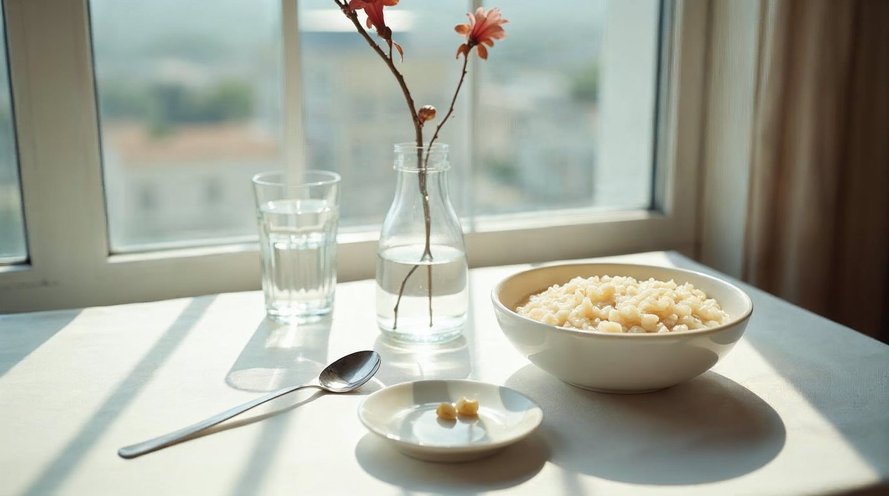
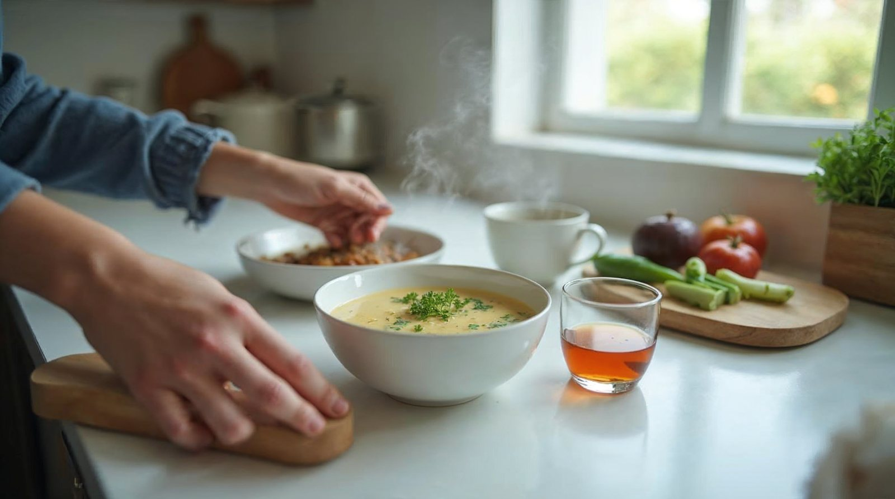
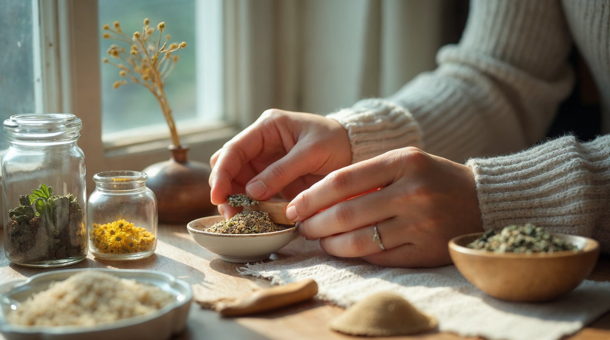

이종호 한의사 감수좋은꿈참사랑한의원 대표원장 (한의사 면허번호 19769)발행 2026-11-23 · 수정 2026-11-26
이 글의 차례
- 왜 이런 불편이 생길 수 있나요
- 왜 슬픔은 잠과 입맛부터 흔들까요?
- 자연스러운 애도와 오래 머무는 슬픔은 어떻게 다른가요?
- 이런 하루를 보내고 계시지 않나요?
- 스스로 점검해 보세요
- 먼저 이렇게 여쭙니다
- 일상에서 먼저 해 볼 수 있는 것
- 입맛이 없을 때는 무엇을 어떻게 드시면 좋을까요?
- 밤에 잠이 오지 않을 때는 어떻게 할까요?
- 슬픔은 몸에서 어떻게 나타나나요?
- 기일이나 명절처럼 힘든 날은 어떻게 준비할까요?
- 얼마나 지켜보고 언제 상담할까요?
- 한의원에서 함께 살필 수 있는 경우
- 오래 간병하다 떠나보낸 경우에는 무엇이 다를까요?
- 떠난 분의 물건은 언제 정리해야 할까요?
- 일터나 학교로 돌아갈 때는 어떻게 할까요?
- 곁에 있는 사람은 어떻게 도울 수 있나요?
- 오래 함께한 반려동물을 떠나보낸 뒤에도 이럴 수 있나요?
- 이렇게 기록해 오시면 상담이 쉬워집니다
- 이런 증상은 먼저 확인이 필요합니다
가까운 사람을 떠나보낸 뒤 잠과 입맛이 한동안 돌아오지 않는 것은 자연스러운 반응일 수 있습니다. 다만 몇 주가 지나도 잠이 얕거나 끼니를 거의 못 드신다면 몸이 너무 오래 지치지 않도록 함께 살피는 것이 좋습니다. 그래서 언제부터 잠과 입맛이 흔들렸는지, 하루를 어떻게 지내시는지를 먼저 여쭙고, 혼자 견디기 어려울 때 연락할 곳도 함께 알려 드립니다.
왜 이런 불편이 생길 수 있나요
- 큰 슬픔은 몸에도 스트레스로 작용해 잠이 얕아지고 입맛이 떨어지는 경우가 많습니다.
- 떠난 사람이 생각나는 시간, 특히 밤에 잠들기 어렵거나 새벽에 깨기 쉽습니다.
- 끼니를 거르는 날이 이어지면 기운이 떨어지고 몸이 더 무겁게 느껴집니다.
- 슬픔이 오래 이어지며 일상이 거의 어려워진다면 우울로 이어진 것인지 확인이 필요할 수 있습니다.
왜 슬픔은 잠과 입맛부터 흔들까요?
큰 상실을 겪으면 몸은 긴장 상태로 들어갑니다. 마음이 놀라고 아픈 만큼 몸도 경계를 늦추지 못해, 누워도 깊이 잠들지 못하고 배가 고프다는 느낌도 잘 오지 않습니다. 슬픔이 머리에서만이 아니라 몸 전체에서 일어나는 일이라는 뜻입니다.
함께 지내던 사람과의 일상이 사라진 것도 큽니다. 같이 밥을 먹던 식탁, 잠들기 전 나누던 대화, 아침에 듣던 목소리가 없어지면 하루를 받쳐 주던 틀이 한꺼번에 비어 버립니다. 그래서 끼니 시간과 잠자리에 들 때 빈자리가 더 크게 느껴집니다.
장례와 여러 정리를 치르는 동안에는 정신없이 버티다가, 모든 일이 끝나고 조용해진 뒤에야 피로와 슬픔이 한꺼번에 밀려오는 경우도 많습니다. 몇 주가 지나 오히려 잠과 입맛이 더 무너졌다는 분이 있는 것도 이 때문입니다.
자연스러운 애도와 오래 머무는 슬픔은 어떻게 다른가요?
애도에는 정해진 기간이 없습니다. 사람마다, 떠난 분과의 관계마다 슬픔의 깊이와 길이가 다릅니다. 다만 시간이 지나며 슬픔이 파도처럼 왔다 가고, 그 사이에 잠시라도 밥을 먹고 일상을 보내는 시간이 생긴다면 마음이 제 속도로 애도하고 있는 것입니다.
반대로 몇 달이 지나도 하루 대부분을 아무것도 하지 못하고, 떠난 분 생각 외에는 아무것도 마음에 들어오지 않으며, 잠과 식사가 처음보다 더 무너지고 있다면 혼자 감당하기 어려운 상태일 수 있습니다. 이때는 정신건강의학과나 애도 상담을 함께 받아 보시길 권합니다.
어느 쪽이든 잠과 입맛이 오래 흔들리면 몸이 먼저 지칩니다. 마음의 속도는 존중하되, 몸이 버틸 수 있도록 곁에서 돕는 것이 한의원에서 할 수 있는 일입니다.
이런 하루를 보내고 계시지 않나요?
- 예를 들어 새벽 3~4시에 눈이 떠져 다시 잠들지 못하는 날이 이어지는 경우
- 예를 들어 하루 종일 커피나 물만 마시고 저녁에야 몇 숟가락 드는 경우
- 예를 들어 떠난 분이 쓰던 방이나 물건을 보면 숨이 막히는 것 같아 집에 있기가 힘든 경우
- 예를 들어 사람들 앞에서는 괜찮은 척하다가 집에 오면 기운이 하나도 없는 경우
- 예를 들어 오래 병간호를 하다 떠나보낸 뒤 허전함과 미안함이 함께 밀려오는 경우
이런 하루는 마음이 약해서 생기는 것이 아닙니다. 소중한 사람을 잃은 뒤 몸과 마음이 겪는 흔한 모습이어서, 비슷한 이야기를 진료실에서 자주 듣습니다. 다만 그 하루가 너무 오래 이어져 몸이 먼저 무너지지 않도록, 지금 어떤 하루를 보내고 계신지 있는 그대로 들려주세요. 작은 것부터 함께 챙겨 보겠습니다.
스스로 점검해 보세요
- 잠드는 데 한 시간 넘게 걸리거나 새벽에 깨면 다시 잠들지 못한다
- 하루 두 끼 이상 거르는 날이 많다
- 한 달 사이 체중이 눈에 띄게 줄었다
- 가슴이 답답하고 한숨이 자주 나온다
- 장을 보거나 씻는 것처럼 기본적인 일도 버겁다
- 사람을 만나는 것을 피하게 된다
- 몸이 무겁고 자주 감기에 걸린다
해당하는 항목이 많고 몇 주째 그대로라면, 마음을 돌보는 것과 함께 몸도 살필 때입니다. 점검 결과를 적어 오시면 이야기를 시작하기가 한결 쉽습니다.

먼저 이렇게 여쭙니다
- 언제부터 잠과 입맛이 흔들렸나요?
- 하루에 끼니를 몇 번 드시나요?
- 잠은 몇 시간 정도 주무시나요?
- 곁에서 이야기를 나눌 사람이 있나요?
- 체중이 많이 줄었나요?
첫 방문에서는 맥을 짚으며 지금 몸이 얼마나 지쳐 있는지 먼저 봅니다. 잠은 몇 시간이나 주무시는지, 하루 무엇을 얼마나 드시는지, 속은 편한지, 가슴이 답답하거나 한숨이 잦은지도 하나씩 여쭙습니다.
떠난 분에 대한 이야기는 하고 싶은 만큼만 하셔도 됩니다. 말을 꺼내다 눈물이 나도 괜찮고, 아직 이야기하기 어렵다면 잠과 식사 이야기만으로도 진료는 충분히 시작할 수 있습니다.

일상에서 먼저 해 볼 수 있는 것
- 입맛이 없어도 죽이나 국처럼 부드러운 음식을 조금씩 자주 먹기
- 하루 한 번 밖에 나가 걷기
- 슬픔을 억지로 참지 말고 믿을 만한 사람에게 이야기하기
- 같은 처지의 사람들이 모이는 모임이나 상담 찾아보기
- 기일이나 명절처럼 힘든 날은 미리 함께 있을 사람을 정해 두기
진료실에 오실 때 "먹을 기운도 없다"고 하시는 분이 많습니다. 그럴수록 몸이 견딜 수 있도록 가장 쉬운 한 끼부터 함께 정해 봅니다. 아침에 따뜻한 미음 반 그릇처럼, 지금 할 수 있는 만큼이면 충분하고, 그 양은 조금씩 늘려 가면 됩니다.
입맛이 없을 때는 무엇을 어떻게 드시면 좋을까요?
한 번에 한 그릇을 다 드시려 하지 마시고, 하루를 다섯 번쯤으로 나눠 조금씩 드세요. 미음이나 죽, 달걀찜, 두부처럼 부드럽고 따뜻한 음식이 속에 부담이 덜합니다. 국에 밥을 조금 말아 드시는 것도 방법입니다.
혼자 차려 먹기가 힘들다면 가까운 가족이나 지인에게 반찬을 부탁하거나, 소분된 죽이나 국을 사 두셔도 됩니다. 끼니를 챙기는 것이 떠난 분을 잊는 일이 아니라, 그분을 기억할 힘을 지키는 일이라고 생각해 주셨으면 합니다.
커피로 끼니를 대신하면 속이 쓰리고 잠도 더 얕아지기 쉽습니다. 따뜻한 보리차나 숭늉처럼 자극이 적은 것으로 바꿔 보세요.
밤에 잠이 오지 않을 때는 어떻게 할까요?
잠자리에 누워 떠난 분 생각이 밀려오면 억지로 참으려 하지 마세요. 잠깐 일어나 거실에서 따뜻한 물을 마시고, 마음이 조금 가라앉으면 다시 누우시면 됩니다. 누워서 휴대폰으로 사진을 오래 보는 것은 잠을 더 멀어지게 할 수 있어 낮 시간으로 미뤄 두세요.
잠드는 시각은 들쭉날쭉해도 일어나는 시각은 일정하게 지키시길 권합니다. 낮에 잠깐이라도 햇빛을 보고 걸으면 밤에 몸이 쉬는 데 도움이 됩니다. 낮잠은 30분 안쪽으로 짧게 하세요.
새벽에 깨는 일이 잦다면 잠자리 옆에 메모지를 두고 떠오르는 생각을 적어 보세요. 적어 두면 머릿속에서 계속 맴도는 것이 조금 줄어듭니다.
슬픔은 몸에서 어떻게 나타나나요?
가슴이 꽉 막힌 듯 답답하고, 숨을 깊게 쉬려 해도 잘 안 쉬어진다는 분이 많습니다. 한숨이 저절로 나오고, 목에 무언가 걸린 듯한 느낌을 말씀하시기도 합니다. 어깨가 굳고 머리가 늘 무거운 것도 흔합니다.
속이 더부룩하고 조금만 먹어도 배가 부르거나, 변이 며칠씩 안 나오는 분도 있습니다. 기운이 떨어지면서 감기에 자주 걸리거나 입안이 헐기도 합니다. 이런 변화는 마음의 일이 몸으로 이어진 것이어서, 몸의 불편을 함께 돌보면 마음이 버티는 데도 힘이 됩니다.
그래서 잠과 소화가 중심이면 한약 상담을, 어깨와 목의 긴장이 크면 침을 함께 고려합니다. 한약은 드시는 약을 먼저 확인한 뒤 필요한지부터 판단합니다.
기일이나 명절처럼 힘든 날은 어떻게 준비할까요?
떠난 분의 생일, 기일, 명절, 함께 여행했던 계절이 다가오면 한동안 괜찮던 잠과 입맛이 다시 흔들리기도 합니다. 이것은 뒤로 물러난 것이 아니라 애도에서 흔히 있는 일입니다.
그날을 혼자 보내지 않도록 미리 함께 있을 사람을 정해 두세요. 떠난 분을 기억하는 작은 의식을 정해 두는 분도 있습니다. 좋아하시던 음식을 차리거나, 함께 걷던 길을 걸어 보는 것처럼요. 그날 앞뒤로 잠과 식사를 조금 더 챙기면 몸이 덜 흔들립니다.
얼마나 지켜보고 언제 상담할까요?
상실 뒤 처음 몇 주는 잠과 입맛이 흔들리는 것이 자연스러운 경우가 많습니다. 다만 한 달이 지나도 하루 한 끼도 제대로 드시기 어렵거나, 잠이 네 시간도 안 되는 날이 이어진다면 미루지 말고 진료를 받아 보세요.
몇 달이 지나도 일상으로 돌아가는 기미가 보이지 않는다면, 한의원 진료와 함께 정신건강의학과나 동작구 정신건강복지센터 상담을 나란히 받으실 수 있습니다.

한의원에서 함께 살필 수 있는 경우
- 상실 뒤 잠이 얕아진 경우 잠의 모양과 마음의 부담을 함께 살핍니다.
- 입맛이 없고 소화가 불편한 경우 식사와 소화를 함께 살핍니다.
- 기운이 없고 몸이 무거운 경우 피로와 생활 리듬을 함께 살핍니다.
좋은꿈참사랑한의원에서는 먼저 지금의 하루를 서두르지 않고 충분히 듣고, 진맥과 복진 등 필요한 방법으로 몸 상태를 살핍니다. 그다음 잠과 소화를 돕는 생활 요령, 침, 한약 상담 가운데 상태에 맞는 방법을 정하고, 정신건강의학과나 지역 상담 기관이 필요하다고 판단되면 안내합니다. 귀가 전에는 일주일 동안 지켜볼 잠과 식사 기록을 함께 정해 드립니다.
오래 간병하다 떠나보낸 경우에는 무엇이 다를까요?
오랜 병간호 끝에 가족을 떠나보낸 분은 슬픔과 함께 허탈함을 크게 느끼십니다. 매일 약 시간과 식사, 병원 일정에 맞춰 돌아가던 하루가 갑자기 비어 버려, 무엇을 해야 할지 모르겠다는 말씀을 자주 하십니다.
간병이 끝났다는 안도감이 드는 순간 죄책감이 따라오기도 합니다. 하지만 그 안도감은 오랫동안 지쳐 있던 몸과 마음이 보내는 자연스러운 반응입니다. 그런 마음이 들었다고 해서 떠난 분을 덜 사랑한 것이 아닙니다.
이런 분들은 간병하는 동안 미뤄 둔 허리·어깨 통증과 쪼개진 잠의 습관이 함께 남아 있는 경우가 많습니다. 그래서 슬픔과 함께 그동안 쌓인 몸의 피로도 하나씩 살펴 드립니다.
떠난 분의 물건은 언제 정리해야 할까요?
정해진 때는 없습니다. 장례 직후 서둘러 정리하고 나서 후회하는 분도 있고, 몇 년 동안 방을 그대로 두는 분도 있습니다. 마음이 준비되었을 때, 가능하면 다른 가족과 함께 조금씩 정리하시길 권합니다.
다만 물건을 볼 때마다 숨이 막히고 그 공간에 들어가기조차 어렵다면, 잠시 문을 닫아 두거나 상자에 넣어 눈에 덜 띄는 곳으로 옮겨 두는 것도 방법입니다. 버리는 것이 아니라 잠시 쉬어 가는 것입니다.
일터나 학교로 돌아갈 때는 어떻게 할까요?
복귀 첫 주에는 집중이 잘 되지 않고 쉽게 지치는 것이 자연스럽습니다. 가능하다면 동료나 상사에게 상황을 간단히 알려 두고, 처음 며칠은 일의 양을 조금 줄여 달라고 부탁해 보세요.
일하는 중에 갑자기 슬픔이 밀려오면 잠시 자리를 떠나 바깥 공기를 쐬고 오셔도 됩니다. 점심을 거르기 쉬운 시기라 간단한 먹을거리를 가방에 챙겨 다니시길 권합니다.
곁에 있는 사람은 어떻게 도울 수 있나요?
슬픔에 잠긴 가족이나 친구에게 어떤 말을 해야 할지 몰라 연락을 망설이는 분이 많습니다. 좋은 말을 찾기보다 "생각하고 있어", "밥은 먹었어?" 같은 짧은 연락이 더 큰 힘이 되기도 합니다.
반찬을 가져다주거나, 함께 장을 보거나, 산책을 같이 나가는 것처럼 구체적인 도움이 고맙게 느껴집니다. 몇 주가 지나 주변의 관심이 줄어들 때 오히려 더 힘든 경우가 많아, 시간이 지난 뒤에도 안부를 이어 가 주세요.
오래 함께한 반려동물을 떠나보낸 뒤에도 이럴 수 있나요?
네, 그럴 수 있습니다. 십 년 넘게 함께 지낸 반려동물은 가족과 다르지 않아, 떠나보낸 뒤 잠과 입맛이 흔들리는 분이 적지 않습니다. 주변에서 그 슬픔을 가볍게 여기면 마음을 털어놓을 곳이 없어 더 오래 혼자 앓기도 합니다.
산책하던 시간, 밥을 챙기던 시간처럼 하루의 일과가 반려동물에 맞춰져 있던 분일수록 빈자리가 크게 느껴집니다. 그 시간에 다른 산책길을 걸어 보거나, 같은 경험을 한 사람들과 이야기를 나누는 것이 도움이 되기도 합니다.
슬픔의 대상이 누구든 잠과 식사가 오래 흔들린다면 몸은 똑같이 지칩니다. 부끄러워하지 마시고 편하게 말씀해 주세요.
이렇게 기록해 오시면 상담이 쉬워집니다
- 일주일 동안의 잠든 시각, 깬 시각, 깬 횟수
- 하루 끼니와 먹은 양
- 체중 변화(대략이라도)
- 복용 중인 약
기록은 하루 한 줄이면 충분합니다. '잠 4시간, 죽 반 그릇 두 번, 오후에 산책' 정도로만 적어도 몇 주 뒤에는 조금씩 달라지는 흐름이 보입니다. 쓰기 힘든 날은 건너뛰셔도 괜찮습니다.
이런 증상은 먼저 확인이 필요합니다
- 스스로를 해치고 싶은 생각이 드는 경우
- 스스로를 해칠 생각이 들면 ☎ 109로 바로 연락하세요.
이런 신호가 있으면 한의원보다 가까운 병원이나 응급실을 먼저 찾으세요.

여쭙는 것
- 언제부터 잠과 입맛이 흔들렸나요?
- 하루에 끼니를 몇 번 드시나요?
- 잠은 몇 시간 정도 주무시나요?
생활에서 해 볼 것
- 입맛이 없어도 죽이나 국처럼 부드러운 음식을 조금씩 자주 먹기
- 하루 한 번 밖에 나가 걷기
- 슬픔을 억지로 참지 말고 믿을 만한 사람에게 이야기하기
한의원에서 함께 살필 것
- 상실 뒤 잠이 얕아진 경우 잠의 모양과 마음의 부담을 함께 살핍니다.
- 입맛이 없고 소화가 불편한 경우 식사와 소화를 함께 살핍니다.
- 기운이 없고 몸이 무거운 경우 피로와 생활 리듬을 함께 살핍니다.
먼저 확인이 필요한 신호
- 스스로를 해치고 싶은 생각이 드는 경우
- 스스로를 해칠 생각이 들면 109로 바로 연락하세요.
한눈에 보는 표
| 구분 | 핵심 |
|---|---|
| 여쭙는 것 | 언제부터 잠과 입맛이 흔들렸나요? 하루에 끼니를 몇 번 드시나요? |
| 생활에서 해 볼 것 | 입맛이 없어도 죽이나 국처럼 부드러운 음식을 조금씩 자주 먹기 하루 한 번 밖에 나가 걷기 |
| 한의원에서 함께 살필 것 | 상실 뒤 잠이 얕아진 경우 잠의 모양과 마음의 부담을 함께 살핍니다. 입맛이 없고 소화가 불편한 경우 식사와 소화를 함께 살핍니다. |
| 먼저 확인이 필요한 신호 | 스스로를 해치고 싶은 생각이 드는 경우 스스로를 해칠 생각이 들면 109로 바로 연락하세요. |
자주 묻는 질문
슬픈 게 당연한데 진료가 필요한가요?
슬픔 자체는 자연스러운 일이지만, 잠과 식사가 오래 흔들리면 몸도 함께 살피는 것이 좋습니다.
정신건강 상담은 어디서 받나요?
동작구 정신건강복지센터나 정신건강의학과에서 상담받으실 수 있습니다.
가족이 대신 와서 상담해도 되나요?
진료는 본인이 오셔야 하지만, 처음에는 가족과 함께 오시면 이야기를 나누기가 한결 편합니다.
진료 시간은 어떻게 되나요?
좋은꿈참사랑한의원은 평일 09:30~20:00(점심 13:00~14:00), 토·일·공휴일 09:30~15:00에 진료합니다.
좋은꿈참사랑한의원은 재진 때 지난번 이야기부터 이어서 여쭙니다. 진료시간과 예약은 오시는 길에서 확인하세요.
어디서 상담받을 수 있나요?
좋은꿈참사랑한의원은 서울 동작구 만양로2길 2 신성빌딩 3층·5층(서울 동작구 상도동, 7호선 상도역 3번 출구 근처)에 있습니다. 한의사 3명(이종호 대표원장, 조영기 수석진료원장, 정원영 진료원장)이 진료합니다. 진료시간은 평일 09:30~20:00(점심 13:00~14:00), 토·일·공휴일 09:30~15:00이며, 방문 전 전화로 확인을 권합니다. 예약은 네이버 예약, 카카오톡 상담, 전화 02-815-7510로 받습니다.
이 글은 일반적인 건강 정보이며 개인의 진단이나 치료를 대신하지 않습니다. 증상이 있거나 복용 중인 약이 있다면 진료를 통해 확인하세요. 치료 효과는 개인마다 다를 수 있습니다.
작성 기준: 일반적으로 알려져 있는 건강 정보를 참고해 정리했습니다(대표원장 감수). 증상 기록은 1~2주 동안 하루 1회, 비슷한 시간에 적어 오시면 지난 상태와 비교하기 쉽습니다.